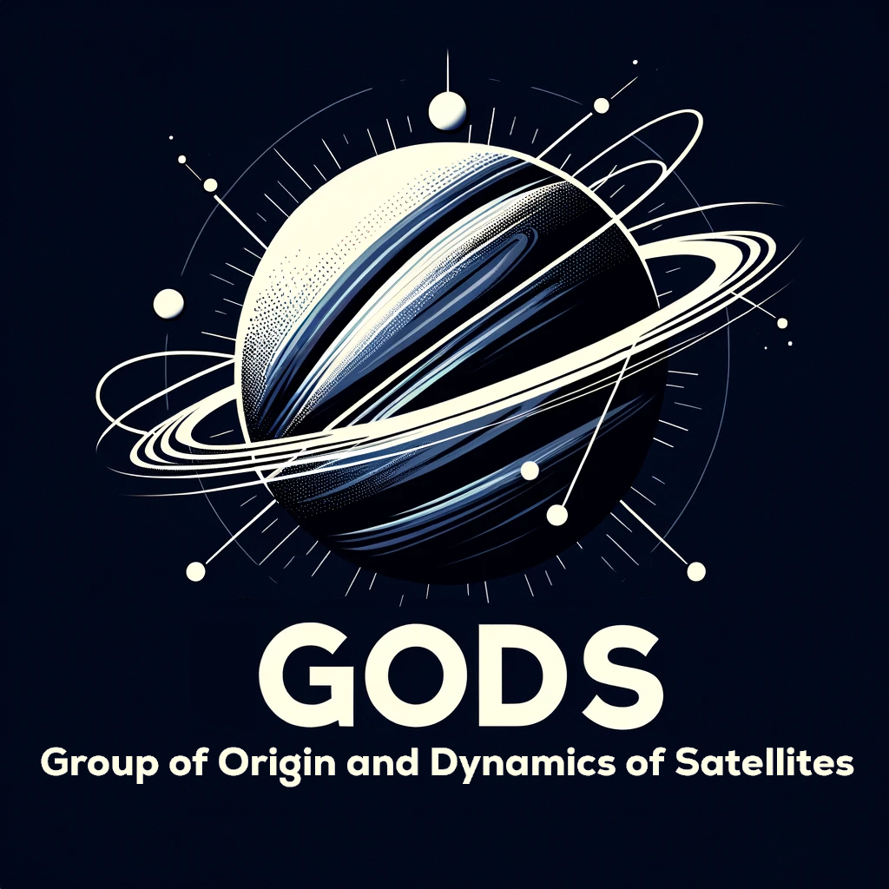

|  |
The Group of Origin and Dynamics of Satellites (GODS) is a research group focused on the physical mechanisms driving the formation, orbital evolution, and detectability of natural satellites, both in the Solar System and in extrasolar planetary systems. Our work lies at the interface between orbital dynamics, planetary accretion, and observational constraints, leveraging high-resolution N-body simulations, analytical modelling, and machine learning techniques to investigate the structural and dynamical outcomes of satellite and ring systems across different formation regimes. |
Research Topics
Accretion in Giant-Impact Generated Disks
- Investigation of accretion regimes (continuous, discrete, pyramidal).
- Early dynamical evolution and migration of natural satellites.
- Applications to the Earth–Moon system, Pluto–Charon, binary asteroids, and other terrestrial bodies.
Dynamical Interaction Between Rings and Satellites
- Satellite migration driven by disk torques.
- Gap opening and resonant interactions in particulate disks.
- Applications to rings around planets and minor bodies.
Formation and Detection of Exomoons
- Investigation of post-impact disk conditions and subsequent disk evolution in exoplanetary systems.
- Use of transit timing variations (TTV) and transit duration variations (TDV) for indirect detection.
- Identification of exomoon signals in both synthetic and observational light curves.
Published articles
- Madeira et al. (2025c): Do self-gravitating hard-sphere disk simulations form Darwin ellipsoids?
- Madeira et al. (2025b): On the formation of satellites in dense solid-particle disks
Members
- Prof. Dr. Gustavo Madeira

- M.Sc. Leandro Esteves
- M.Sc. Paulo Soares
- Dr. Tiago Francisco
- Prof. Dr. Bruno Morgado